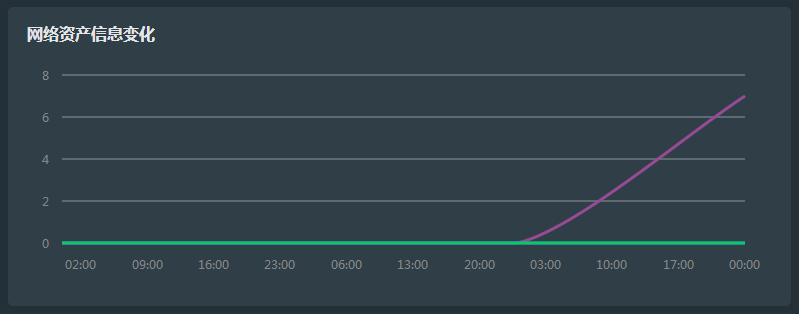
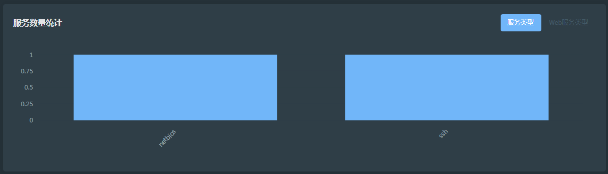

序
一、简介
二、安装
2.1、Windows安装指南
2.2、Linux安装指南
2.3、Linux 一条命令安装
2.4、OSX安装指南
2.5、Docker安装指南
三、使用
3.1、启动关闭
3.2、搜索
3.3、任务
3.4、统计
3.5、配置
3.6、小技巧
四、开发
4.1、源码文件结构
4.2、插件编写
4.3、源码解释
4.4、二次开发
Published with GitBook
3.4、统计
巡风之统计功能
统计功能是统计系统的各项数据，包括如下：
收集记录总数
IP总数
任务总数
漏洞分类
网络资产信息变化
服务数量统计
其中比较有意义的是5和6
网络资产信息变化
顾名思义，这个表表示的是巡风每次扫描发现资产数量的统计与走向。

服务数量统计
根据统计已发现资产开启的服务 
results matching "
"
No results matching "
"